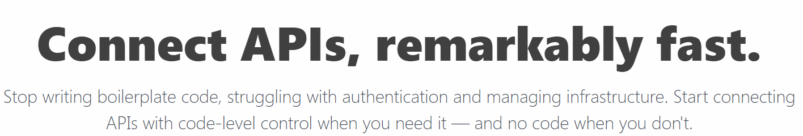

read.me
- Raymond Camden
- Senior Developer Evangelist for Adobe
- Enterprise Cat Demo Builder
- Second best "Just Dance 2019" player (in my house)
- Blogging at raymondcamden.com
- Tweeting @raymondcamden
What is Pipedream?

App Idea!
- Million dollar idea, honest!
- Create a new Twitter account
- Every hour, tweet a random picture of a cat
App Idea - Implementation
- Set up a Node.js environment in production
- Make Twitter app
- Get Node SDK and setup credentials
- Find my random cat picture
- Upload picture to Twitter
- Create Tweet and associate picture
- Setup the schedule (CRON)
App Idea - Pipedream Implementation
Set up a Node.js environment in productionMake Twitter appGet Node SDK and setup credentials- Find my random cat picture
Upload picture to TwitterCreate Tweet and associate pictureSetup the schedule (CRON)
Pipedream Basics:
- Workflows
- Combine pre-built apps + your code
- *Huge* amount of pre-build code
- Web-based editor
- Ability to share/fork workflows
Pricing
Workflows
- Triggers (Event Sources)
- Steps:
Triggers
- HTTP
- CRON
- Email
- App-based
- Write your own
Demo
Steps
- Custom code or pre-built/custom action
- Steps can be named
- Steps can have parameters
- Steps can access results of other steps
- Access to process.env too (good for secrets)
Demo
Actions
- Pre-built steps
- Approx. 2 billion* available on Pipedream
- You can author these
"Real" Demo 1 - Version 1
- Hit a RSS feed and get entries
- Search for X in entries
- If any, email
- Show "Search RSS 0"
$send.email({
subject: "Your subject",
text: "Plain text email body",
html: "HTML email body"
include_collaborators: false,
});
"Real" Demo 1 - Version 2
- Make code more shareable
- Demonstrate the big problem
- Modify "Search RSS 0"
Workflow Persistance
- $checkpoint
- Any JSON serializable object (or simple value)
- Workflow level (
$checkpoint) or step level (this.$checkpoint)
- UI access to view/modify
"Real" Demo 1 - Version 3
- Remember the date of the latest blog entry
- Filter out older ones
- Update $checkpoint to now
Q and A
Be gentle please...